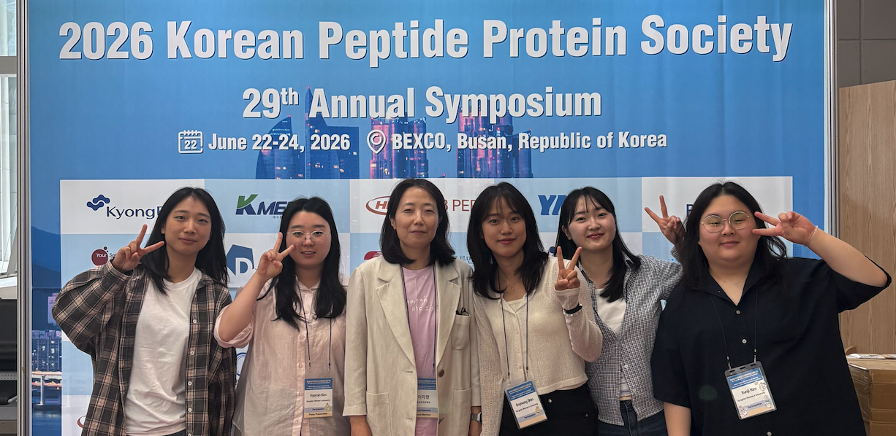

Molecular tools.
Cellular insight.
We develop chemical probes and peptoid transporters to read enzyme activity, visualize cellular environments, and study intracellular delivery.


to reveal.
Latest news
등록된 소식이 없습니다.
Designed at the molecular level.
Tested in living systems.
Our research connects chemical structure with biological behavior. We ask what a molecule detects, where it goes, and how its design can improve the ways we investigate cells.
Read enzyme activity.
Activity-based probes reveal active proteases in living cells, connecting molecular recognition with functional measurements.
Make biology visible.
Fluorogenic molecules translate cellular chemistry and local environments into optical signals in cells and tissues.
Reach intracellular targets.
Amphipathic peptoids offer tunable ways to study cellular entry, mitochondrial localization, and cargo accumulation.

Bring your questions.
Build something new.
We welcome students and collaborators interested in chemical biology, molecular probes, protease activity, and intracellular delivery.
jlee@sungshin.ac.kr